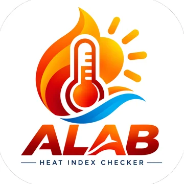

Awareness and Localized Alerts for Heat
For DepEd schools under Memorandum No. 064, s. 2026. Works on any phone, tablet or laptop.
Prefer not to share location? Pick your city instead
Decision aid only. The school head decides the level, coordinating with the SDS for school-level suspension (Sec. 5.2.2). Extreme heat does not automatically suspend classes (par. 6). Weather data by Open-Meteo.com · station data via Iowa Environmental Mesonet · cross-check with PAGASA.
From any thermometer with humidity (the classroom thermo-hygrometer in Annex B). ALAB uses it for the 4H call and to calibrate a live classroom estimate for the rest of the day.
Used when no weather station is near you. Open PAGASA's iHeatMAP, choose your province and municipality, and type the heat index shown for the current hour. It stays valid for 90 minutes.
Open PAGASA iHeatMAP ↗ · PAGASA heat index page ↗
iHeatMAP is published mainly during the hot season. If it shows no data, ALAB keeps using ECMWF automatically.
Submit daily to DRRMS: bit.ly/PHExtremeHeat
Gives ALAB live airport weather reports and PAGASA's iHeatMAP forecast (when published). Setup: README → "ALAB relay".
Hayo <27 °C · Hinay 27–32 °C · Hinga 33–41 °C · Hinto ≥42 °C (DM 064, s. 2026, Sec. 5.2.2).
Outdoor: the median of up to 7 forecast models (ECMWF, which PAGASA's heat index map uses, plus GFS, ICON, JMA, GEM, UKMO and Open-Meteo best match) at your exact position. It is corrected by up to 3 nearby airport weather stations (distance- and age-weighted, with outlier checks), and interpolated to the current minute between updates.
Classroom: each thermometer reading records how much hotter or more humid the room is than outside. The latest readings for that room (weighted toward the newest) are added to the live outdoor value until the end of the day.
Heat index: NOAA/NWS equation (the basis of the PAGASA chart). Room readings are rounded per Annex B. Values can differ from the printed chart by about ±1 °C, so values near a threshold are flagged. Data stays on this device.
ALAB: Awareness and Localized Alerts for Heat · Heat Index Checker · v5